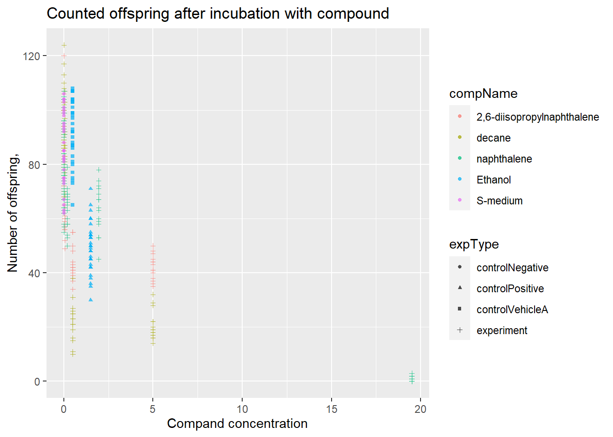

3 Portfolio assignment 1.2 part 2
3.1 H. Using the OSF website, select a project that addresses an aspect of the SARS-Cov-2 virus.
3.3 J. Have a look at the code. Describe in your own words what the code intents to achieve.
it downloads gtrends data for the quary “bats” and the word bat translated in diffrent langueses in there associated geolocations, for the time period 2016 to 2020. using this it makes figures that outline the correlation between searches about covid-19 and searches about bats.
3.4 K. In terms of readibility of the code, how would you grade (1(very bad)-5(very good)) the code available.
i would give it a 4, the code includes comments outlining the function of big code chunks, however the code uses packages and function im not familiar with so it still quite hard to really understand what the code does.
3.5 L. Download the code and the data to a new RStudio project M. Run the script or code that is available to reproduce at least 1 figure
tv.dat <-
read.csv(file="~/Documents/Research_Projects/Ongoing/BatsCovid/NewAnalysis_Dec2020/Data/Weekly/USTelevision/GDELTBatsUS1620.csv")
tv.dat$date <- ymd(tv.dat$date)
tv.dat[61, "date"] <- "2021-01-01"
tv.dat[61, "value"] <- NA
tv.dat[61, "X"] <- 61
ggplot() +
geom_line(data=tv.dat, aes(x=X, y=value), size=0.8, color="steelblue", linetype="solid") +
theme_bw() +
scale_x_continuous(breaks=c(1, 13, 25, 37, 49, 61), labels=c("2016", "2017", "2018", "2019", "2020", "2021")) +
theme(axis.text.x = element_text(colour="black",size=14,angle=0,hjust=.5,vjust=.5,face="plain"),
axis.text.y = element_text(colour="black",size=14,angle=0,hjust=1,vjust=0,face="plain"),
axis.title.x = element_text(colour="black",size=12,angle=0,hjust=.5,vjust=.5,face="plain"),
axis.title.y = element_text(colour="black",size=12,angle=90,hjust=.5,vjust=.5,face="plain"),
plot.title = element_text(size=22, face="bold")) +
theme(strip.background =element_rect(fill="wheat")) + labs(x="", y="") +
theme(strip.text = element_text(colour = "black", size=14, face="bold"))3.6 N. When you encounter errors or flaws in the script, try fixing them and record your changes.
Errors:
Error in file(file, “rt”) : cannot open the connection
changed the filepath so it matches mine.
Error in ymd(tv.dat$date) : could not find function “ymd”.
ymd is part of the lubridate package, loaded the lubridate package.
library(lubridate)##
## Attaching package: 'lubridate'## The following objects are masked from 'package:base':
##
## date, intersect, setdiff, uniontv.dat <-
read.csv(file=(here("1.2_data/GDELTBatsUS1620.csv")))
tv.dat$date <- ymd(tv.dat$date)
tv.dat[61, "date"] <- "2021-01-01"
tv.dat[61, "value"] <- NA
tv.dat[61, "X"] <- 61
ggplot() +
geom_line(data=tv.dat, aes(x=X, y=value), size=0.8, color="steelblue", linetype="solid") +
theme_bw() +
scale_x_continuous(breaks=c(1, 13, 25, 37, 49, 61), labels=c("2016", "2017", "2018", "2019", "2020", "2021")) +
theme(axis.text.x = element_text(colour="black",size=14,angle=0,hjust=.5,vjust=.5,face="plain"),
axis.text.y = element_text(colour="black",size=14,angle=0,hjust=1,vjust=0,face="plain"),
axis.title.x = element_text(colour="black",size=12,angle=0,hjust=.5,vjust=.5,face="plain"),
axis.title.y = element_text(colour="black",size=12,angle=90,hjust=.5,vjust=.5,face="plain"),
plot.title = element_text(size=22, face="bold")) +
theme(strip.background =element_rect(fill="wheat")) + labs(x="", y="") +
theme(strip.text = element_text(colour = "black", size=14, face="bold"))## Warning: Removed 1 row(s) containing missing values (geom_path).
3.7 O. Taken together on a scale from 1 (very hard) to 5 (very easy), how much effort did it take you to reproduce the visualization from the project, report or article.
5 very easy, the code used uses common packages and is very readable.